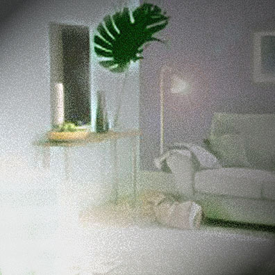

Anne Bryant-Hamon
A Measure

The pine-wood boards were washed in egg-shell white.
Soon they would grasp cathedral bedroom walls
of lavender. Green ferns could nestle tight
in tea-stained terracottas bought from stalls
on Barcelona’s RAMBLA. Now a day
that came ten years before would sprite our home,
small tokens fashioned for these shelves. “The way
that life should be,” I say. A taste of Rome
and wisps of Spain now spread themselves around
our place in Florida. They comfort me,
these memories that I would never trade
or wish away. This is a way I’ve found
to measure something’s value worthily —
and know whether to keep or let it fade.
Paper, Bone and Moon
My marrow is the ink — the paper, bone.
Life’s watermarks are fading love and rage.
Ephemera, faint spots that tell my age
are passing moons of knowledge. These are blown
about as leaves of autumn. There is wine
enough to lead me through my drunken haze
as I attempt to tell a thousand ways
of every subtle vintage.
of every subtle vintage. We’re the Rhine,
red-blue cascades of passion rushing out,
a liquor that can not be drawn again
into its former vessel. We must flow
till we are fully spent.
till we are fully spent. Sometimes I doubt
that all our lives are worth the pain, but then,
there are so many things I do not know.
Anne Bryant-Hamon has been writing poetry since childhood. She teaches Language Arts and makes her home in Lynn Haven, FL with her husband David and their children. Anne has been published in both print and on-line poetry journals such as River View, Yggdrazil, Amazonian Mists, The Green Tricycle, The Horsethief’s Journal, Embracing the Child, Poetic Express, Diary of a Poet, Romantic Hearts Magazine, and Compuserve’s 1998-99 Poetry Anthology.
|